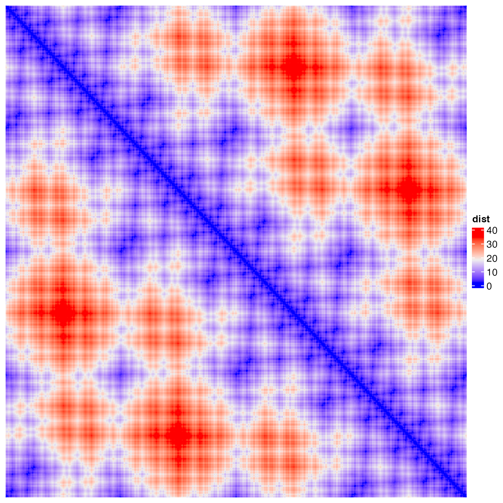

Construction and expansion
H-curve has the following two base units: an H-shape unit \(H_1\) and its rotated version \(H_2\):
draw_multiple_curves(H1, H2, nrow = 1, closed = TRUE)
To recursively expand it to higher levels, we can replace the four corners (each corner is represented as a 2x2 grids) into full H-units. Or we can also do in a copy-paste way where we put the four copies of the H-unit in the four quadrants and connect them in the 1-2-3-4 order as in the following figure.

To connect two units, the corners in the corresponding units need to be opened. Take unit 1 as an example, as it connects to unit 2 via its topright corner, there are two ways to open this corner: to open the horizontal segment and the vertical segment on the topright corner. This process is similar for unit 2-4. We name the openning of the horizontal segment as "h" and the openning of the vertical segment as "v". See the next two plots:
draw_multiple_curves(
h_curve(H1, iteration = 1, connect = "h"),
h_curve(H1, iteration = 1, connect = "v"),
closed = TRUE
)
Then, denote \(H^{(0)}\) as the base unit of H-curve, \(H^{(1)}\) as the H-curve after the first iteration. We can have the following expansion rule:
\[ H^{(1)} = H^{(0)} \cdot c \cdot H^{(0)} \cdot c \cdot H^{(0)} \cdot c \cdot H^{(0)} \cdot c, \quad c \in \{h, v\} \]
where the four \(H^{(0)}\) have the order of 1-2-3-4. \(c\) is the action of how two units are connected and it takes values of \(h\) (open the horiozntal segment) and \(v\) (open the vertical segment). The fourth \(H^{(0)}\) connects back to the first \(H^{(0)}\).
As there are two types of base units for the H-curve: \(H_1\) and \(H_2\), the four \(H^{(0)}\) actually can be differently and independently selected. Then we can change the previous equation to:
\[ H^{(1)} = H_1^{(0)} \cdot c \cdot H_2^{(0)} \cdot c \cdot H_3^{(0)} \cdot c \cdot H_4^{(0)} \cdot c, \quad H_i^{(0)} \in \{H_1, H_2\}, i \in \{1..4\}\]
The next plots show all the forms of H-curves after one iteration, with the connection method “h”:
draw_multiple_curves(
expand_h(H1, H1, H1, H1), expand_h(H1, H1, H1, H2), # "h" is the default
expand_h(H1, H1, H2, H1), expand_h(H1, H1, H2, H2),
expand_h(H1, H2, H1, H1), expand_h(H1, H2, H1, H2),
expand_h(H1, H2, H2, H1), expand_h(H1, H2, H2, H2),
expand_h(H2, H1, H1, H1), expand_h(H2, H1, H1, H2),
expand_h(H2, H1, H2, H1), expand_h(H2, H1, H2, H2),
expand_h(H2, H2, H1, H1), expand_h(H2, H2, H1, H2),
expand_h(H2, H2, H2, H1), expand_h(H2, H2, H2, H2),
nrow = 2, title = FALSE, closed = TRUE
)
More generally, we can generalize the previous equation to any step of the iteration \(k\):
\[ H^{(k)} = H_1^{(k-1)} \cdot c \cdot H_2^{(k-1)} \cdot c \cdot H_3^{(k-1)} \cdot c \cdot H_4^{(k-1)} \cdot c, \quad k \ge 1\]
Number of different forms
After the first iteration, the total number of forms of the H-curve denoted as \(n_1\) is
\[ n_1 = n_0^4 \cdot 2 \]
where \(n_0\) is the number of different forms of base patterns, which is 2. The second 2 is the number of connection method, i.e. “h” and “v”.
Similally, we can write the numbers of forms after other iterations:
\[ \begin{align*} n_2 &= n_1^4 \cdot 2 \\ n_3 &= n_2^4 \cdot 2 \\ & ... \\ n_k &= n_{k-1}^4 \cdot 2\\ \end{align*} \]
Then we can have the number of different forms of H-curve after iteration \(k\), taking \(H_1\) and \(H_2\) as the base units:
\[ n_k = 2^{4^k + 4^{k-1} + ... + 4 + 1} = 2^{\sum_{i=0}^k{4^i}} = 2^{\frac{4^{k+1}-1}{3}} \]
It shows after iteration \(k\), each form can be assigned to an unique sequence of binary bits with length of \((4^{k+1}-1)/3\).
More general forms
More generally, \(H_1\) and \(H_2\) can be thought as building on an even smaller unit \(H_0\):
\[ \begin{align*} H_1 &= H_0 \cdot h \cdot H_0 \cdot h \cdot H_0 \cdot h \cdot H_0 \cdot h \\ H_2 &= H_0 \cdot v \cdot H_0 \cdot v \cdot H_0 \cdot v \cdot H_0 \cdot v \\ \end{align*} \]
draw_multiple_curves(
H0,
expand_h(H0, connect = "h"),
expand_h(H0, connect = "v"),
closed = TRUE
)
Also the connection methods for the four units are not necessary to be the same. In the followng example, we take \(H_0\) as the base unit and take vhvh as the connection methods, i.e. the vertical segment of the first unit, the horizontal segment of the second unit, the vertical segment of the third unit and the horizontal segment of the fourth segment are opened:
fun = function(h, k) {
for(i in 1:k) h = expand_h(h, connect = "vhvh")
h
}
fun(H0, 5) |> plot_segments(closed = TRUE)
Global structure is unchanged
Last, although H-curve has a large number of different forms, different settings only affect foldings locally in the curve, while its global structure is still unchanged:
draw_multiple_curves(
h_curve(H1, iteration = 3, random = TRUE),
h_curve(H1, iteration = 3, random = TRUE),
h_curve(H1, iteration = 5, random = TRUE),
h_curve(H1, iteration = 5, random = TRUE),
nrow = 2
)
Locality
We look at an H-curve with 1024 points.
## [1] 1024 2And their distances in the 2D space:
m = as.matrix(dist(p))
library(ComplexHeatmap)
Heatmap(m, name = "dist", cluster_rows = FALSE, cluster_columns = FALSE,
show_row_names = FALSE, show_column_names = FALSE)